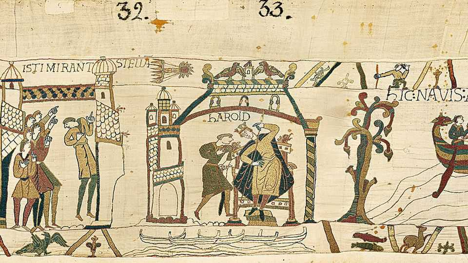

The many mysteries and lessons of the Bayeux tapestry
A new show at the British Museum will focus the world’s attention on a medieval marvel

Sep 3rd 2026
FROM LED ZEPPELIN to David Bowie, London has welcomed plenty of famous acts for what was billed as a once-in-a-lifetime performance. Now a colourful, ancient piece of linen roughly the length of a Boeing 747 has raised the bar. It is back in England for the first time in around 950 years. Its run at the British Museum, which opens on September 10th, is being heralded as a once-in-a-millennium show.
And with good reason. The Bayeux tapestry enjoys something akin to rock-star status. This summer it has been the hottest ticket in Britain. When spots went on sale in July, they sold out almost as fast as you can say “William the Conqueror”. (More tickets, for January to July 2027, have yet to be released.) Around 1m people are expected to see the tapestry in London while it is on loan from the French state, making it one of the best-attended museum exhibitions in British history.
Most would say that, as the only surviving medieval artwork of its size, the Bayeux tapestry is priceless. But as part of a government indemnity scheme, Britain’s Treasury has put a figure on it, insuring the tapestry for £800m ($1.1bn). That is on a par with the highest value for a travelling artwork ever made public: the $100m assigned to the “Mona Lisa” when it travelled to America in 1962-63, worth $1.1bn today.

Like da Vinci’s painting, the Bayeux tapestry is a masterpiece whose power depends, at least in part, on its mystery. But there is not one main question, as there is with the smiling (or would you say unsmiling?) “Mona Lisa”. Instead, the tapestry raises dozens of questions that the centuries have complicated. Some of the central ones—who stitched it, why and its intended destination—are disputed still. “If you ask ten different historians working on the period, you might get ten different answers,” says Benjamin Pohl, a professor at the University of Bristol, who published a paper suggesting that it may have been designed as mealtime reading for monks.
A few facts are undisputed. The tapestry depicts William the Bastard-turned-Conqueror’s triumph in the Norman conquest of 1066. (Some call this the last time England was successfully invaded; others point to the largely bloodless arrival of another William, of Orange, in 1688.) You can recognise the Normans by their gauche hairstyle—with long locks and the back of their heads shaved—while the English sport moustaches. (Only one of those looks has aged well.)
The tapestry, probably commissioned by Bishop Odo of Bayeux to celebrate the victory of William, his half-brother, is a piece of war propaganda that looks like an ancient comic strip. Many scholars think it was made in Canterbury in the 1070s-80s before travelling to Bayeux, to hang in Odo’s cathedral. It offers an intricate, sometimes wandering account of a broken promise and ascent to power that changed England’s royal line, class structure and the English language itself.
It begins with Edward the Confessor, England’s childless king, telling Harold Godwinson, a nobleman, to travel to Normandy. When he is there, he befriends William and appears to give an oath that William should inherit the crown. But when Edward dies, Harold breaks that promise and claims the throne. Even the cosmos seems to object: Halley’s comet blazes across the sky in a portent of doom. The resulting battle is nasty, brutish and not very short by medieval standards (lasting about nine hours), with stripped corpses, felled horses, flying arrows and pointed suffering. Harold is killed. English troops flee. And next…

The “next” is yet another mystery. How the tapestry was meant to end is unknown: the last bit is missing. “It could have gone on for a few centimetres or a few metres,” says Professor Pohl. Many assume it concluded with William’s coronation on Christmas Day. But no one can be sure. A competition has invited children to imagine and stitch a conclusion.
Those lucky enough to get up close to the tapestry have about 70 metres of details to take in. The linen teems with 737 animals and 627 people (only three of whom, in the main embroidery, are women). There are the Latin phrases, the Aesop’s fables in the margins, the bizarrely prominent genitalia. The significance of the tapestry is not just in the details, however, but in what its story and survival reveal about history, objects and memory.
Take the unknowns, for instance. “Things where you have to fill in the blanks are more alluring,” insists Nick Cullinan, director of the British Museum. “The fact that there’s something missing invites you in…to engage with it and think about why it was made, what’s missing, and what that means.” Think of everyone who flocks to the armless “Venus de Milo” in the Louvre. Was she once carrying an apple, or modestly trying to reach so the drapery would not slip below her hips? The absent limbs keep people guessing.
There is also the question of why it is even called a tapestry at all when it is really an embroidery (the former requiring a loom, the latter done by hand). But that is a mystery only for the uninitiated: a French scholar in the 18th century called it a tapisserie (tapestry), and it stuck. “It was a bloke not knowing the difference between his weaving and his embroidery,” says Leonie Hicks, a professor at Canterbury Christ Church University.
Study the tapestry long enough and it will make you consider deeper questions, too, such as who determines people’s understanding of the past. (This is an idea pored over by plenty of historians and the wisest of sources, “Hamilton”: one song in the musical is called “Who Lives, Who Dies, Who Tells Your Story?”) Maybe a decade, and possibly more, elapsed between the end of the Battle of Hastings and when the tapestry was made: how much rumour and hearsay are woven into it as a result?
And then there were those in the 19th century, armed with needles and thread, who set about “fixing” it. Everyone who has heard of the year 1066 knows that Harold was eighty-sixed by an arrow to the eye. But was he? The earliest studies of the tapestry do not show that an arrow was involved. What you see on the tapestry is the work of a restorer, who may have taken creative liberties. Michael Lewis, a lead curator of the British Museum’s exhibition and co-author of “The Story of the Bayeux Tapestry”, thinks the arrow was an “accidental addition” by restorers in the 19th century, who were basing their work on a drawing from the 1720s that had included the arrow.

Further embellishments may exist elsewhere, especially towards the end. “The arrow to the eye is probably the most famous and important one,” but there are others reconstructed in “an imaginative way”, says Dr Lewis, including a man wrapped up in vines. A lesson of the Bayeux tapestry, then, is that history is written not just by the victors, but by the restorers.
For when these fixers set about their work in the 19th century, much had been lost to them already. The historical record is funny like that: how grains of humour and information are worn down by tides of time. The result is that some scenes are now impossible to decode. The most perplexing one features the only named woman, Aelfgyva, in a doorway, speaking to a cleric who is either caressing or striking her. Nearby a naked man squats, mirroring the priest’s gesture.
It may have been a sexual scandal so familiar that it required no explanation. It makes you wonder which modern inside jokes and references will still be understood 900 years from now. Will anyone remember Monica Lewinsky?
One of the most notable things about the tapestry, beyond the sheer unlikelihood of its survival—including almost being used as wagon covers during the French revolution—is that so many leaders have esteemed it for different reasons. Napoleon displayed it in Paris at the Musée Napoléon (now known as the Louvre) to drum up public support for his campaigns and encourage people to enlist. The Nazis eyed it as a chronicle of Aryan supremacy and even stole small fragments of it, which Germany returned this year.
Now it is the turn of Emmanuel Macron, the French president, to use the tapestry for a different goal: to strengthen Anglo-French ties. The hard-fought loan to the British Museum seemed a long shot. Five previous attempts to borrow and exhibit it in London (including on the 900th anniversary of the conquest) resulted in British defeat. But Mr Macron triumphed where others failed, overcoming the concerns of some French curators that shipping the delicate tapestry would lead to damage. It helped that the Bayeux Museum, its usual home, was embarking on a long-overdue renovation.
On September 2nd Mr Macron and King Charles III met at the British Museum to view the tapestry and celebrate the loan. Champagne was noticeably not on offer, but English sparkling wine flowed. So did the jokes. It could have been called “the Canterbury tapestry”, King Charles mused. Mr Macron noted the tapestry’s portrayal of wine being loaded onto Norman ships bound for battle in England: “the French always having certain priorities”. It was a celebratory evening of good lines and great moods.
The fragile tapestry looks rather stronger than politicians in this day and age. Sir Keir Starmer, who negotiated the loan, is now out. The year “1066 was not the only time we had a rapid succession of leaders,” quipped George Osborne, a British former politician who is now chair of the British Museum. Mr Macron will leave office next year and is sure to see the loan as one of his signature achievements.
In short, national borders, allegiances and hairstyles may change over the centuries, but objects are still important in diplomacy. Later this year, in exchange for borrowing the tapestry, several works from the British Museum’s collection will travel to France. Though the French asked for the Rosetta Stone, they had to settle for other treasures, such as medieval chess pieces.
As for how to play the game to secure a coveted ticket to the exhibition, many are going to lose. The tapestry is being laid flat and stretched out in a straight line: you have to hover over a clear case to see it. This limits the number of people who can go through, as do French rules on how much light it can be exposed to in a single day. “We could sell this exhibition out many, many times over,” says Mr Cullinan of the British Museum. “We want as many people to see it as possible, but we want everyone who comes to have a really positive experience.”
For those who miss out in London, they can travel to Bayeux once the museum reopens and see the celebrated tapestry there. Many Brits are surely already plotting their Norman invasion. ■